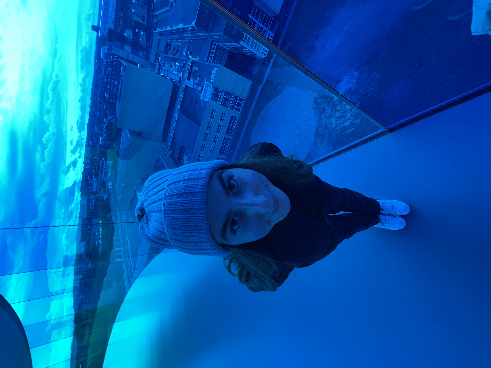

<!DOCTYPE html>
<html lan="en">
<head>
    <meta charset="UTF-8">
    <title>About</title>
    <link rel="icon" type="image/x-icon" href="../img/heart.png">
    <link rel="preconnect" href="https://fonts.googleapis.com">
    <link rel="preconnect" href="https://fonts.gstatic.com" crossorigin>
    <link href="https://fonts.googleapis.com/css2?family=Lilita+One&display=swap" rel="stylesheet">
<link rel="stylesheet" href="../css/style.css"
<body>
    <nav>
        <div class="container">
            <div class="logo">
              <a href="../index.html">
              </a>
              </div>
            <nav>
              <ul>
                <li><a href="../about/about.html">about</a></li>
                <li><a href="../likes/likes.html">likes</a></li>
                <li><a href="../data/data.html">data</a></li>
              </ul>
              </nav>
            </div>
            <hr />
<header>
     <div>
        <h1>howdy!🤠</h1>
        </div>
        </header>
        
        <br>
        Laila is  a third year student at the University of San Francisco, majoring in International Studies and double minoring in Design and Middle Eastern Studies. Within Design, she is interested in graphics, marketing, packaging, and brand identity creation. In her free time, you can find her at a local café working on my Pinterest boards or at the beach enjoying a breakfast burrito.
        She is a Bay Area native who loves spending time with her friends and family. Her hobbies include painting, swimming, and online shopping. She finds great joy in trying new restaurants and blasting music on a scenic drive. She's an Aries with a passion for competition cooking shows and nostagic 90's pop.
        She spends a lot of time on her phone (more on that later though) and loves seeing what other creatives are up to around the world. Her favorite TV shows are Gilmore Girls, The OC, Parenthood, and Dawson's Creek. 
        Laila loves life (particularly food) in the city. Her frequented spots are<a href="https://www.devilsteethbakingcompany.com/">Devil's Teeth Bakery</a>,<a href="https://www.yelp.com/biz/la-taqueria-san-francisco-2">La Taqueria</a>,<a href="https://conservatoryofflowers.org/">The Conservatory of Flowers</a>, and <a href="https://sfrecpark.org/Facilities/Facility/Details/GGP-Dog-Play-Area-2-11">The Golden Gate Dog Park</a>.


</body>
</html>